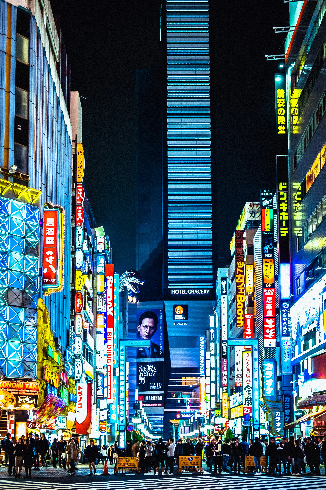
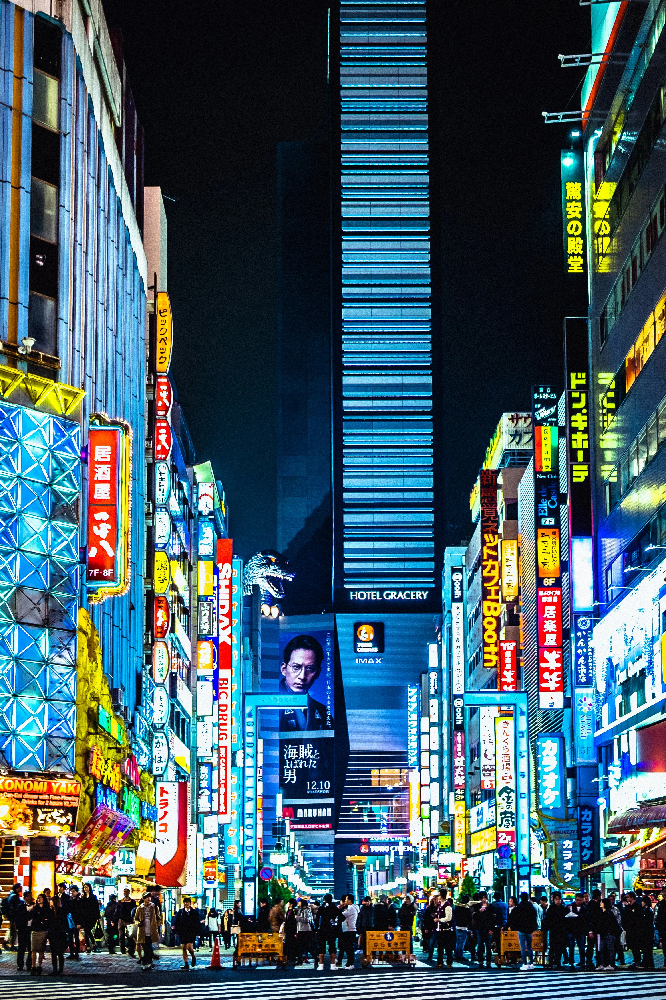

Long ago, Duskveil was a thriving city bathed in the warm glow of the sun. It was a place of wonder, where light and magic intertwined, and its people lived in harmony with the world around them. But over time, a shadow began to creep across the city, as ancient forces stirred beneath its cobbled streets. Legends say that the city’s founders made a pact with an unknown force, a being of twilight and shadows, in exchange for power and protection.
At first, the sun and moon shared the sky in perfect balance, but as the city's thirst for knowledge and control grew, so did the pact’s dark influence. The whispers of this mysterious power grew louder, offering secrets and strength in return for the city’s loyalty. As the people delved deeper into forbidden magic and sought control over the unseen, the sun grew weary of their ambition and withdrew.
One fateful day, the sun no longer rose over Duskveil. It was as if the city had been swallowed by a veil of twilight, never to see the light of day again. The skies turned a deep, endless purple, with neon lights flickering in place of the sun. Some say the sun abandoned Duskveil because the city had lost its way, while others believe that it is still there, waiting to return when the city’s people are ready to face the truth of their pact.
Now, Duskveil remains forever in the twilight hours, a city where magic thrives in the darkness and the neon glow of the streets hides ancient secrets. The people of Duskveil live in a world where the sun is nothing more than a distant memory, forgotten by time itself, but the magic of the city keeps its heart beating in the shadows.
 
